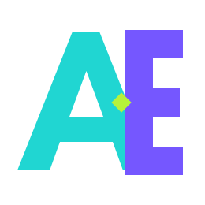

Start with working hardware and software
Power on, connect and deploy without first designing a baseboard or becoming a Yocto specialist.

For product companies building connected devices
Active-ESL provides complete connected boards with embedded Linux ready to run. Develop your application, take the same design into manufacture, and keep deployed products secure and supported with the Active-ESL Lifecycle Platform.
Website concept for stakeholder review. The consultation calendar will be connected when its booking URL is available.
Why Active-ESL
Many connected products begin with a compute module, a custom carrier board and a Linux build the customer must integrate and maintain. Active-ESL brings those responsibilities together so your team can focus on the product application.
Power on, connect and deploy without first designing a baseboard or becoming a Yocto specialist.
Your application runs in a container above the maintained board operating system, creating a clear support boundary.
A complete single-board design reduces duplicated circuitry, connectors and uncertainty about who owns a platform fault.
The Lifecycle Platform helps address vulnerabilities without building an embedded security team from scratch.
Featured platforms
EDGE LITE and EDGE GATEWAY are the public focus for evaluation and early customer conversations. Both are single-board designs intended to move from development into volume manufacture.
i.MX 8M Mini
Compact connected board for cost-sensitive products that still need industrial temperature options, Wi-Fi 6 tri-radio capability and a clear path from evaluation to manufacture.
i.MX 8M Mini
Communications gateway for products that need flexible wired and wireless connectivity without redesigning the board every time a radio technology changes.
Featured platforms for website and sales conversations. Availability is not claimed as shipping today.
Core software pillar
Hardware alone is not enough for connected products. The Lifecycle Platform is the managed software layer that keeps board images, security updates and remote application delivery on a supportable path across the product lifetime.
Service packaging and commercial terms remain subject to confirmation.
What customers get
Product companies can concentrate on differentiating software while Active-ESL owns the board support package, platform updates and the route into manufacture.
Technology partners
Active-ESL is an NXP and Foundries.io partner. These relationships strengthen the route from processor platform and board support through secure software delivery and long-term product maintenance.
Our product family is built around NXP i.MX application processors, providing practical steps in performance, power, connectivity and edge-AI capability.
Our Lifecycle Platform uses the Foundries.io secure Linux and over-the-air update path for maintainable board software and remote container delivery.
Specific platform support and commercial service terms are confirmed for each customer programme.
Application evidence
Anonymised from Active-ESL engineering work: a small-form-factor connected device for voice interaction and edge intelligence.
Microphone and speaker, local sensing, Wi-Fi connectivity and cellular expansion in a compact enclosure, with a production-ready software path rather than a disposable prototype.
An i.MX 8M Mini single-board core with onboard Wi-Fi 6, M.2 cellular expansion, radar sensing support and a board-specific Linux image intended for evaluation and volume manufacture.
Product teams can prove the application experience on a complete board, then manufacture or customise that same design instead of restarting after a hobbyist or module-plus-carrier prototype.
Customer names, shipping volumes and availability dates are omitted. This is engineering evidence for the Active-ESL approach, not a named case study release.
Product roadmap
Beyond the Wave 1 focus, the proposed Active-ESL family covers Pi-compatible compute, low-power AI, handheld and gateway-pro tiers. These remain roadmap items until specifications and support are confirmed.
EDGE PI · EDGE PI PRO
Industrial, supportable alternatives for teams that have proven a concept on Raspberry Pi–class hardware and need a manufacturable next step.
EDGE TABLET · EDGE FOLD PRO · EDGE LP
Battery-aware and HMI-led platforms for mobile, field and long-life sensing or display use cases.
EDGE GATEWAY PRO
Higher-connectivity gateway tier with stronger Ethernet and expansion options for denser edge workloads.
Roadmap SKUs are proposed. No pricing or ship dates are published on this concept site.
Approach
Reusable ecosystem
A common expansion approach reduces repeated engineering and helps customers assemble the right demonstration quickly.
Planned common interfaces support reusable display sizes, cameras and audio modules across compatible evaluation platforms.
M.2 and mini-PCIe options allow cellular, LoRa and other radio technologies to evolve without redesigning the whole product.
i.MX 8M Mini, i.MX 8M Plus and i.MX 9 platforms provide practical steps in cost, connectivity, power and edge-AI capability.
Pi-compatible options are intended to move proven concepts onto an industrial, supportable and manufacturable foundation.
Interfaces and processor options remain subject to product qualification. NXP and Foundries.io are confirmed partners; other ecosystem relationships are not claimed here.
Applications
Team
Sales and manufacturing
Electronic hardware engineering
Embedded software engineering
Start the right way
Book a product-platform consultation and we will help define a credible route from evaluation through manufacture and lifecycle support.